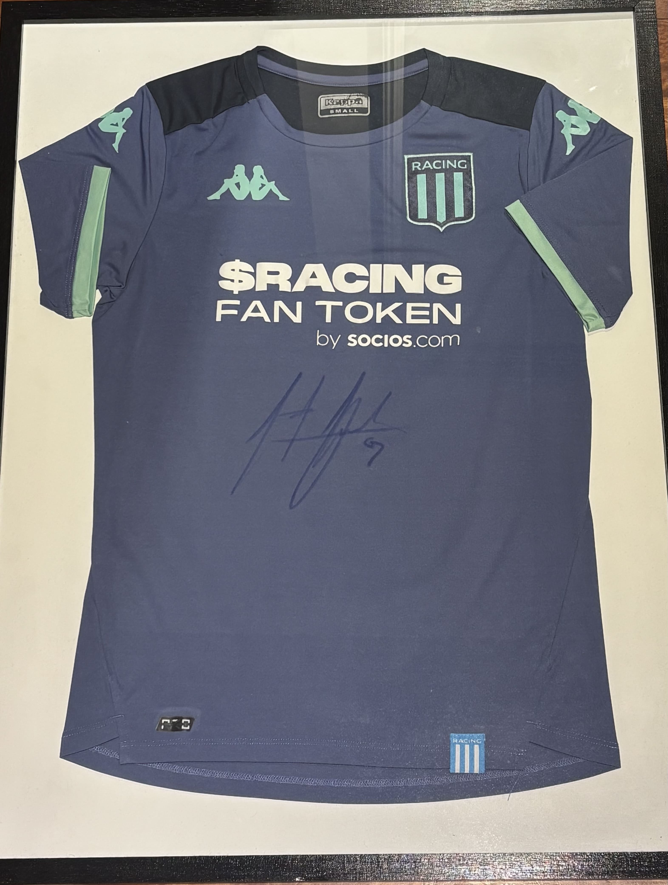
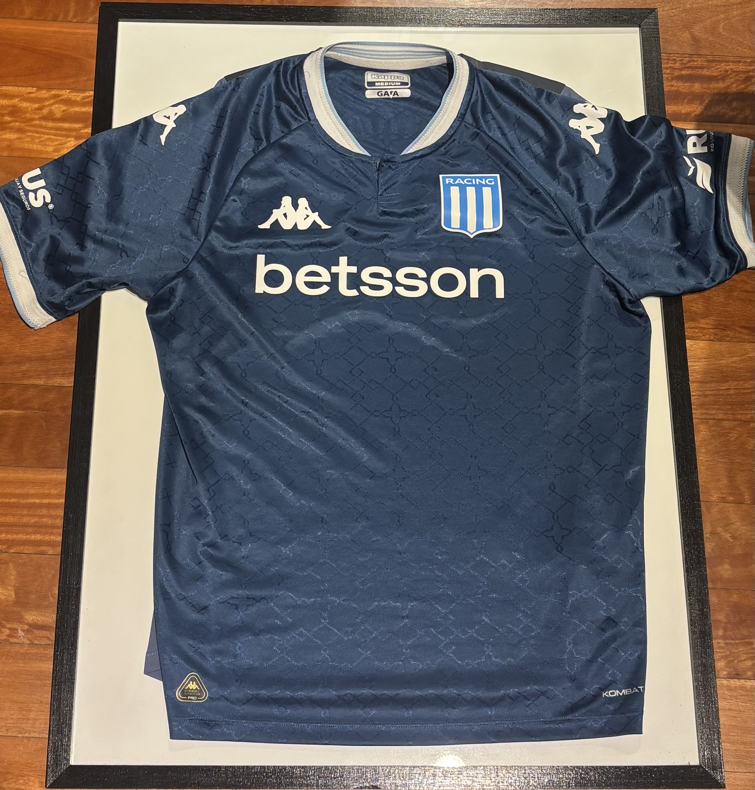
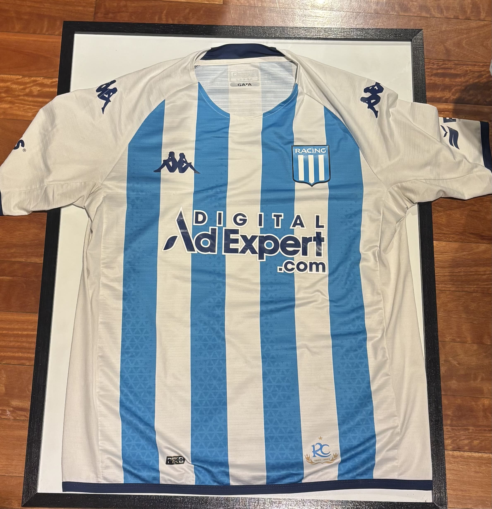
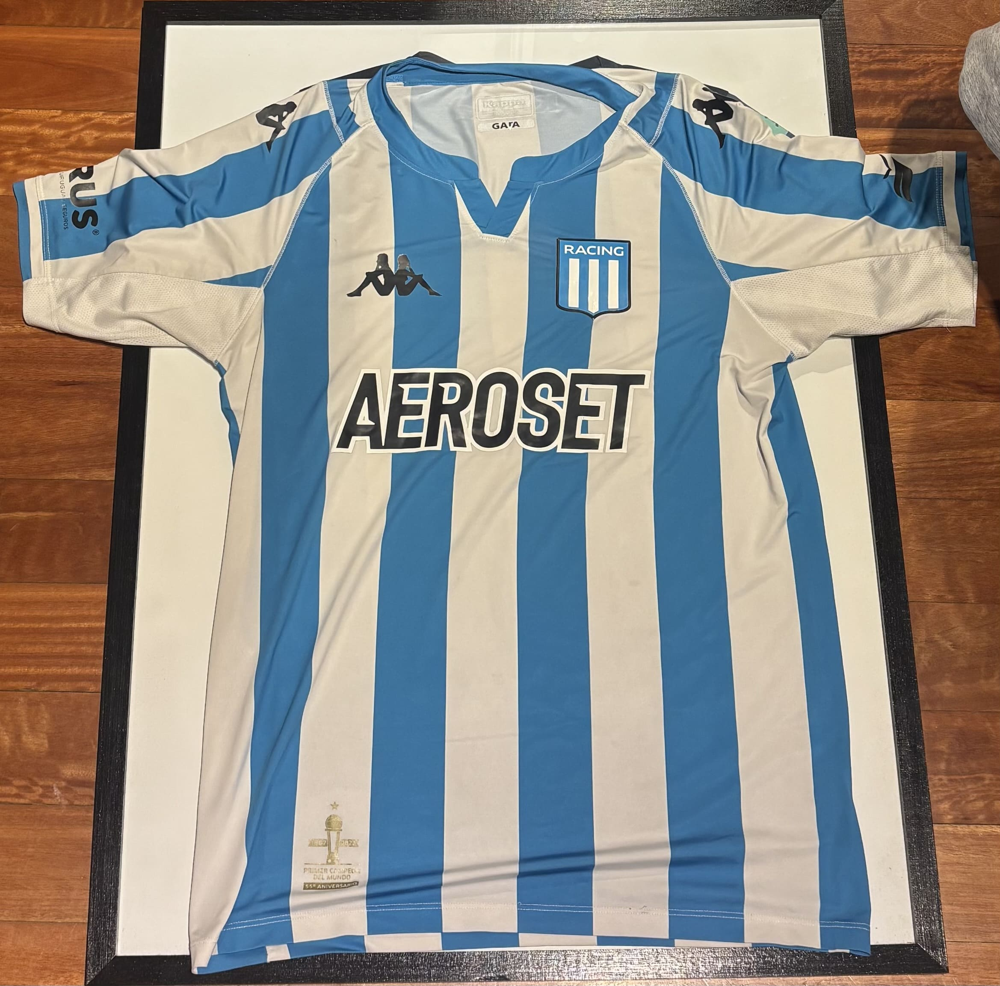
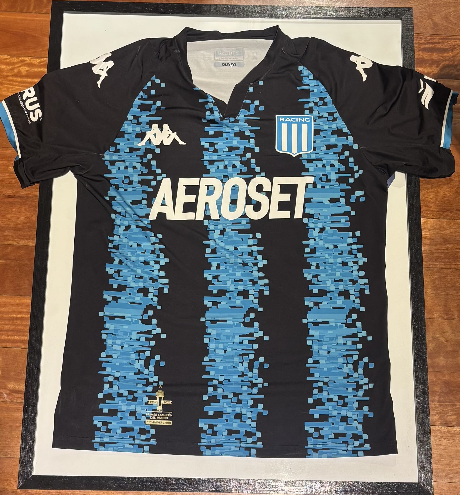

RACING CLUB
En esta sección se encuentran algunas de las camisetas de Racing Club de Avellaneda
que forman parte de mi colección personal.
Racing ocupa un lugar especial dentro de mi colección, por lo que estas
camisetas representan diferentes temporadas, momentos y jugadores que quedarán siempre en mi memoria como fanático de El Primer Grande
RACING CLUB - Adrián "Maravilla" Martinez
SU HISTORIA
Esta camiseta corresponde a Racing Club de Avellaneda.
Fue utilizada durante la temporada 2022/23 y fue confeccionada
por la marca Kappa.
Tiene un significado especial para mí ya que está firmada por Adrián "Maravilla" Martinez, uno de los máximos goleadores de Racing en el siglo XXI.
RACING CLUB - 2025

SU HISTORIA
Esta camiseta corresponde a Racing Club de Avellaneda
Fue utilizada durante la temporada 2025/26 y fue confeccionada
por la marca Kappa.
Es la camiseta utilizada por Racing en 2025, cuando alcanzamos semifinales de la Copa Libertadores de América.
RACING CLUB - 2023

SU HISTORIA
Esta camiseta corresponde a Racing Club de Avellaneda.
Fue utilizada durante la temporada 2023/24 y fue confeccionada
por la marca Kappa.
RACING CLUB - 2022

SU HISTORIA
Esta camiseta corresponde a Racing Club de Avellaneda.
Fue utilizada durante la temporada 2022/23 y fue confeccionada
por la marca Kappa.
Es una de mis camisetas favoritas de Racing y me hace a acordar a un equipo que hilvanó 13 triunfos al hilo en 2022.
RACING CLUB - 2022

SU HISTORIA
Esta camiseta corresponde a Racing Club de Avellaneda.
Fue utilizada durante la temporada 2022/23 y fue confeccionada
por la marca Kappa.
Forma parte de mi colección ya que de igual manera que la camiseta de arriba, me genera lindos recuerdos de ese 2022.